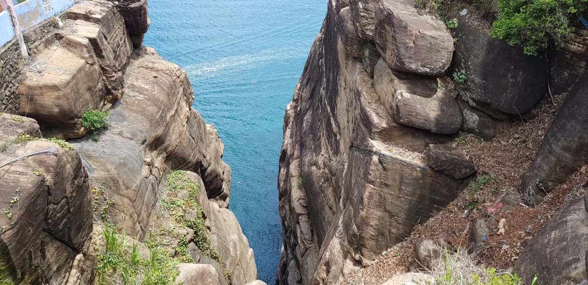
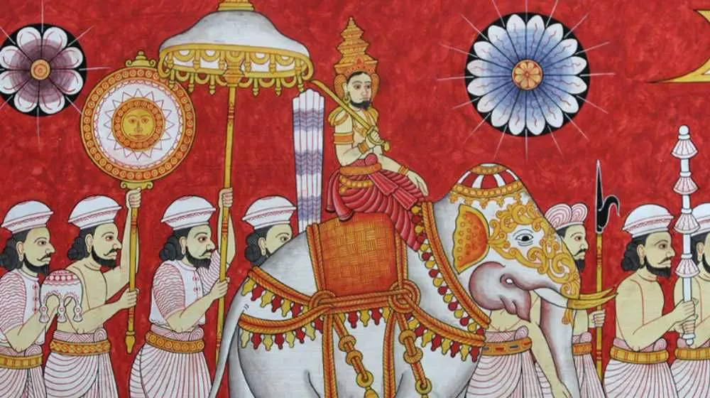
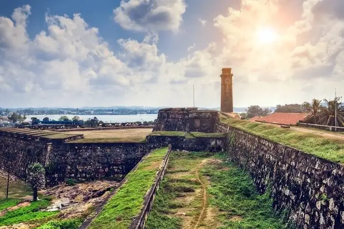
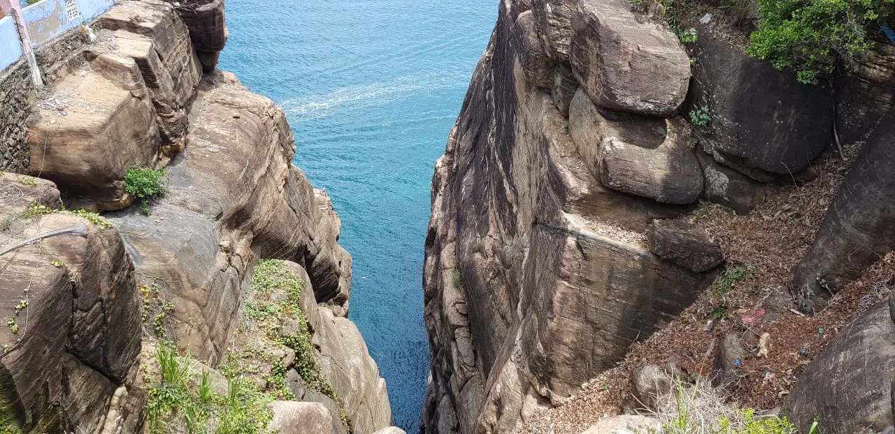
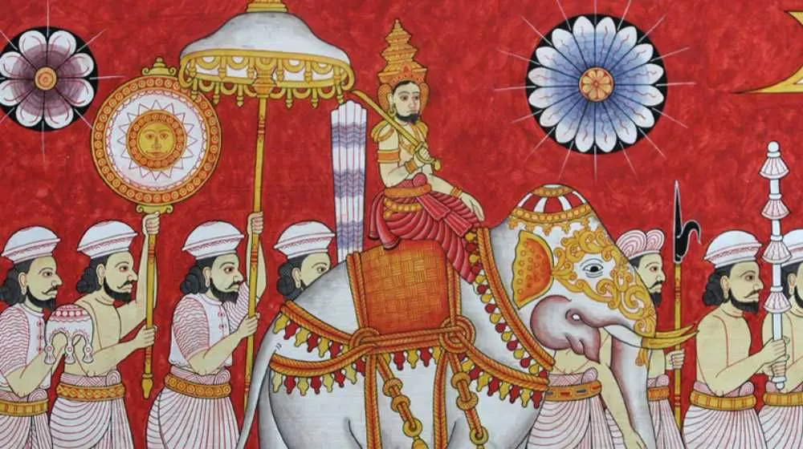
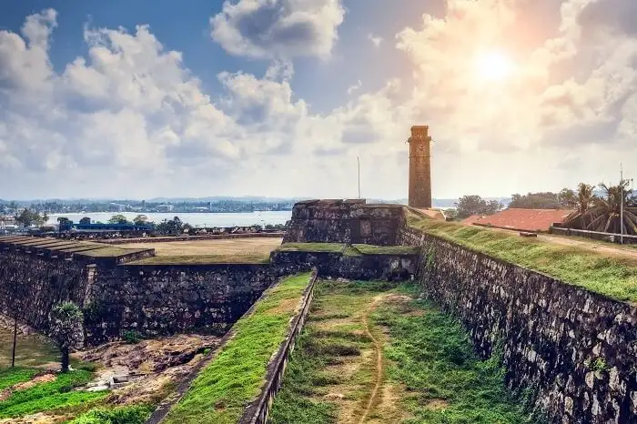
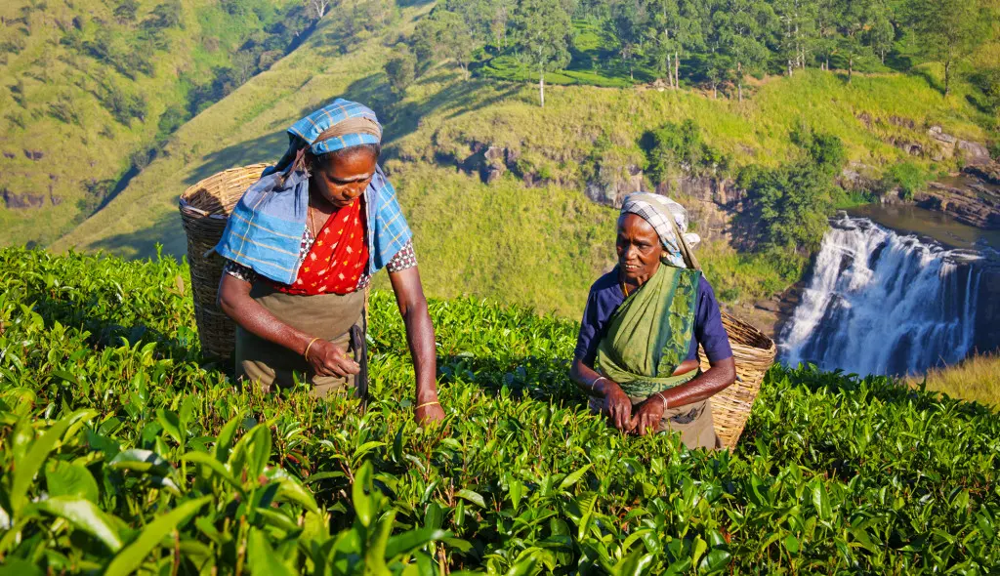
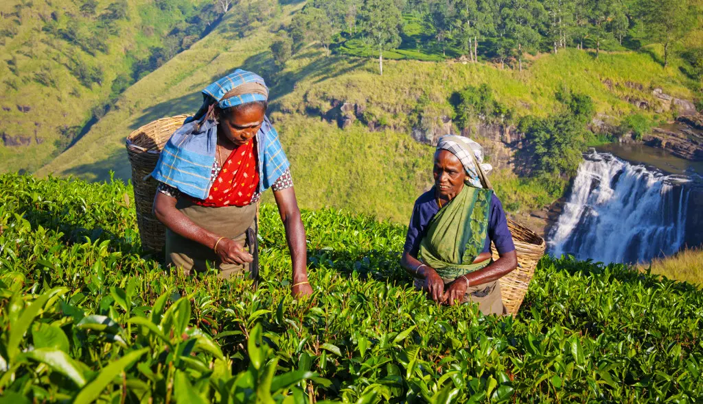

Sri Lanka is a beautiful island nation in the indian Ocean, It is also known as "The pearl of the Indian Ocean". Sri Lanka is measured about 415km from north to south and 220km from east to west. this Island nation is rich in many natural resources. Sri Lanka was also ruled by British. Until 1972 it was called as Ceylon. Sri lanka has a tropical climate as it is located near the north of the equator
As a country with rich cutlural diversity. you will definetly meet sinhalese, Tamils, Muslims, and many more cultures during the vist to Sri Lanka. Who ever you meet, where ever you go you will always recieve love and care from Srlankans as they are creditrd for their warm and friendly nature. and you will never forget the "Sri Lankans' beautiful smile :)"
Facts about Sri Lanka
- Pearl of Indian Ocean
- Highest literacy in South Asian Region
- Have 8 UNESCO Heritage Sites
- Origination of Cinnamon
Useful links when travelling to Sri Lanka
Explore the Paradise
you will amuse by the beauty
 





 
